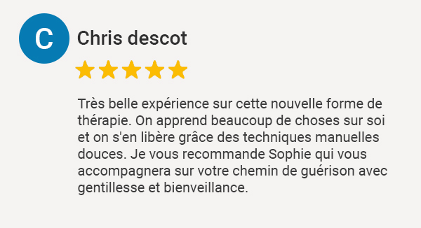

Actualités
Le Naturopathe
Petit point sur le naturopathe La Naturopathie : La Naturopathie est reconnue par L'OMS depuis 2001 comme une pratique de soin bien-être, au même titre que l'ensemble des techniques énergétiques chinoises...
Lire la suite : Le Naturopathe

Douleurs articulaires - mal au dos
Douleurs articulaires Très Régulièrement, les personnes que je rencontre lors de mes rendez-vous se plaignent de douleurs articulaires intenses. Toutes ces personnes, de plus en plus jeune, souffrent d'arthrite, d'arthrose, de polyarthrite rhumatoïde, de...
Lire la suite : Douleurs articulaires - mal au dos
Constipation
point sur la constipation Définition : La constipation ou stase fécale se définit par une difficulté à aller à la selle. Une selle tout les deux ou trois jours est anormal. Elle résulte d'une insuffisance fonctionnelle du foie et du côlon, elle même résultant d'une hygiène de vie...
Lire la suite : Constipation
Hypertension artérielle - HTA
L'hypertension artérielle L'hypertension artérielle est un trouble métabolique profond causant : céphalées ; Troubles sensoriels (étourdissements, bourdonnement d'oreilles) ; Crampes aux extrémités ; Insuffisances cardiaques ; Insuffisances...
Lire la suite : Hypertension artérielle - HTA

Cadeaux - offrez du bien-être
Vous recherchez un cadeau qui a du sens Offrez du bien-être à vos proches Offrez un bilan de Naturopathie ou une séance Méthode JMV®️ Cette dernière, la Méthode JMV, véritable soin naturel, mélange plusieurs techniques énergétiques tels que la Kinésiologie, les mouvements ...
Lire la suite : Cadeaux - offrez du bien-être
Troubles émotionnels - Anxiété - Confiance en soi
Je me nomme Sophie FRESSINGEAS, je suis Naturopathe et Naturo-praticienne en méthode JMV®️ (alliant techniques énergétiques chinoises et naturopathie). Cette dernière, véritable soin naturel, permet de soulager rapidement vos troubles émotionnels tel que : - Chocs...
Lire la suite : Troubles émotionnels - Anxiété - Confiance en soi
Soulager vos allergies
Soulager vos allergies avec la Méthode JMV La pollution, le stress et parfois des facteurs héréditaires affaiblissent notre organisme. Celui-ci peut alors être sensibilisé et réagir en excès en provoquant une inflammation. Les allergies peuvent être multiples et provoquer une grande fatigue et lassitude. Les soins énergétiques de la Méthode JMV ®...
Lire la suite : Soulager vos allergies

vaincre le surpoids avec la méthode JMV® à Biscarrosse
Je me nomme Sophie Fressingeas. Je suis Naturopathe et je peux vous apporter une solution pour vaincre votre surpoids avec la méthode JMV® à Biscarrosse. Nous avons un microbiote intestinal unique, nous ne pouvons donc pas tous manger la même chose. Pour...
Lire la suite : vaincre le surpoids avec la méthode JMV® à Biscarrosse

Remise en forme de la rentrée
Sophie FRESSINGEAS, Naturopathe et praticienne Méthode JMV, je vous accompagne dans votre remise en forme de la rentrée. Conseil pour un rentrée au top : Une alimentation adaptée Remettre son corps en mouvement S'oxygener Préserver son sommeil S'accorder du temps pour soi Chaque personne est différente d'...
Lire la suite : Remise en forme de la rentrée
Vaincre une phobie ou une peur
SOPHIE FRESSINGEAS, naturopathe, je vous aide à vaincre une phobie ou une peur. Votre naturopathe pratique la METHODE JMV®️ à Arcachon, alliant plusieurs techniques énergétiques chinoises et la naturopathie. Cette méthode vous permettra de déprogrammer vos peurs ou vos phobies en douceur. Pour plus d'information, vous pouvez contacter SOPHIE...
Lire la suite : Vaincre une phobie ou une peur
Partagez cette page sur
Mes points forts
Formation et
technique récente

Prix intéressant
Consultation
à domicile
Bilans
personnalisés
Soins sur
mesure
Seule naturopathe sur Saint-Jean-Pied-de-Port à pratiquer la méthode JMV
Avis Google
